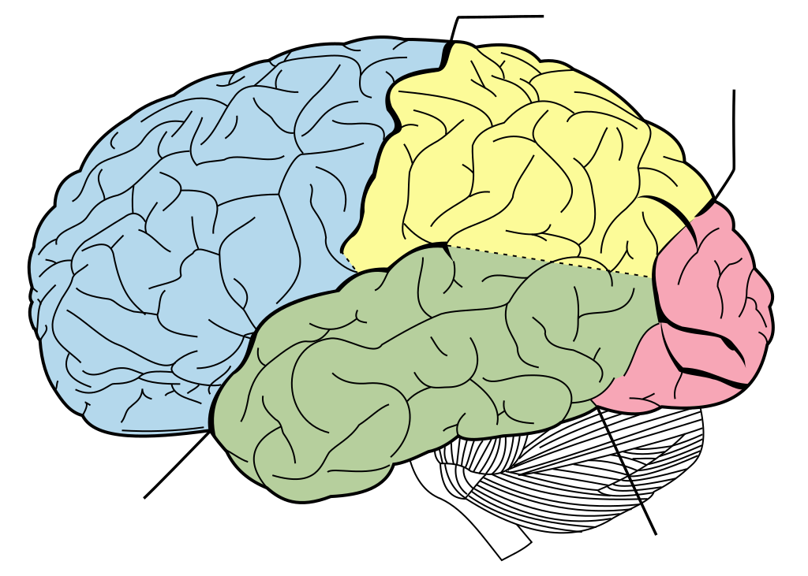

Psychologie Cognitive
Mémoire, attention, perception

Comment le cerveau traite l'information : perception, attention, mémoire, langage.
Livre du domaine public
Alfred Binet — La Suggestibilité (Gutenberg)
Lire le PDF/HTML →
Alfred Binet — La Suggestibilité (Gutenberg)
Mémoire de travail
Baddeley : phonologique + visuo-spatiale + exécutif central.
Biais cognitifs
Disponibilité, ancrage, confirmation — raccourcis utiles mais piégeux.
Mémoire reconstructive
Loftus : les souvenirs peuvent être modifiés par suggestion.
Attention sélective
Gorille invisible : nous ne voyons que ce que nous attendons.